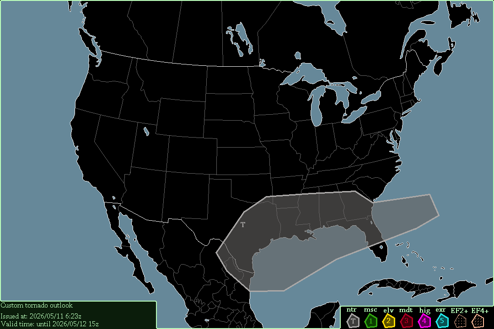

A level 3 moderate risk exists in Oklahoma, starting at 21:00 UTC, 2026/03/05.
Severe thunderstorms are expected surrounding the tornado risk, also starting at 21:00 UTC.
Severe thunderstorms will form in central & northern Texas. SRH is incredibly high, reaching 400 m²/s² at 0-3km & 200-300 m²/s² at 0-1km. Along with that, CAPE exceeds 1000 J/kg in the entire risk area, further increasing severe thunderstorm potential. CAPE may even briefly reach 2000 J/kg just south of where the thunderstorms will develop. In the early morning, these storms will move into Iowa & Minnesota, but having lost all tornado potential.
-- Cenn Devel, 2026/03/05 7:44z.